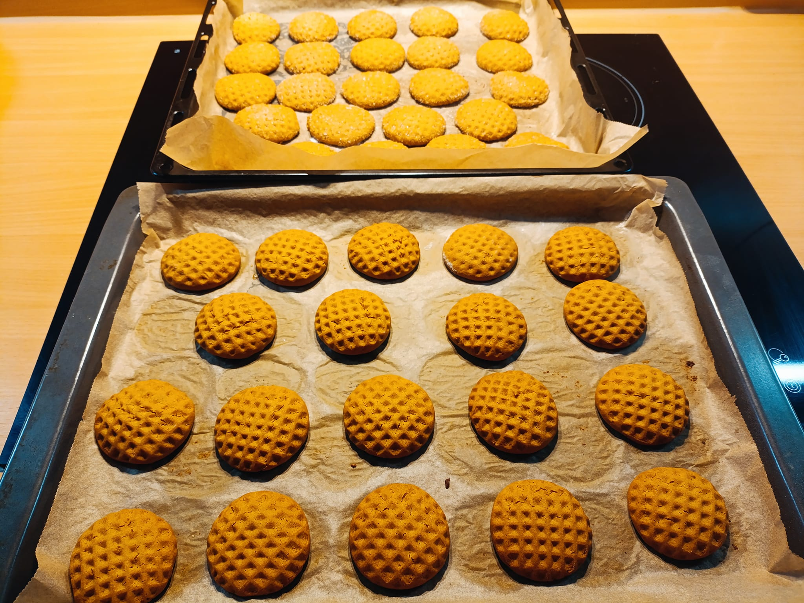
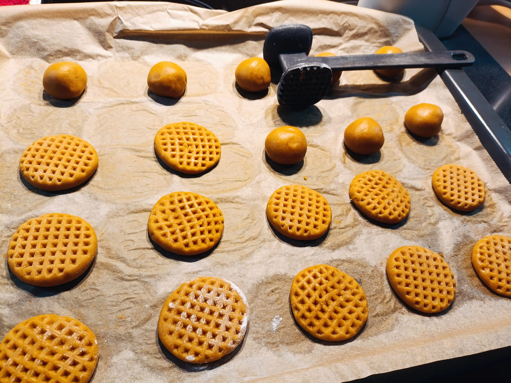

Meeküpsised


Maitsvad meeküpsised
Kindlasti tee retsepti järgi
(Leidsin fb-st selle)
Koostisosad (Ingredients)
- 2 muna (2 eggs)
- 4 s/l suhkurt (4 Tbsp sugar)
- Natuke vanillisuhkrut (A little bit of vanilla sugar)
- 4 s/l mett (4 Tbsp honey)
- 8 s/l toiduõli (8 Tbsp cooking oil)
- 2 t/l küpsetuspulbrit (2 tsp cooking powder)
- 460 grammi jahu (flour)
- Soovi korral poole sidruni jagu sidrunimahla (Optional: lemon juice from half a lemon)
Valmistusõpetus
- Hoia taigen 20 minutit külmas
- Tee pallikesed
- Vormi küpsisteks ja pane ahju (180° 12 min)
Head isu!
Tagasi